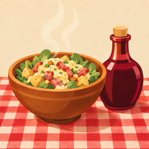

Mijotin
Du bouchon à la grande table
Mijotin est un jeu de gestion pour iPhone. On reprend un petit bouchon lyonnais de la Croix-Rousse et on le fait grandir jusqu'à la grande table de Fourvière, en gérant la cuisine, l'équipe et surtout l'argent : la trésorerie, les prêts bancaires et les clients qui paient en retard.
Écris-nous à trail2moon@gmail.com. Dis-nous le modèle de ton iPhone et ce qui s'est passé : nous répondons en général sous quelques jours.
Questions fréquentes
Ma partie est-elle enregistrée ?
Oui, toute seule, sur ton téléphone, toutes les dix secondes et chaque fois que tu quittes le jeu. Il n'y a ni compte ni sauvegarde en ligne.
Comment passer ma partie sur un autre iPhone ?
Dans le jeu, touche la roue dentée en haut à droite, puis Mettre ma partie à l'abri : le jeu crée un fichier, que tu peux t'envoyer ou ranger dans Fichiers. Sur l'autre iPhone, même endroit : Reprendre une partie mise à l'abri.
J'ai changé d'iPhone ou réinstallé le jeu : où sont mes achats ?
Ils sont liés à ton identifiant Apple. Touche la roue dentée, puis Restaurer mes achats. La Carte du Patron et les décors reviennent aussitôt.
Que se passe-t-il quand je ferme le jeu ?
Ta maison continue de tourner, au ralenti, pendant 8 heures au plus (12 heures avec la Carte du Patron). À ton retour, l'écran « Pendant ton absence » raconte tout : les Pots gagnés, les factures payées, les retards à relancer.
Qu'est-ce qui est gratuit, qu'est-ce qui est payant ?
Le petit bouchon de la Croix-Rousse est gratuit, jusqu'à ses trois Saladiers. La suite de l'aventure (le Vieux-Lyon, la Presqu'île, Confluence et Fourvière) se débloque en un seul achat, la Carte du Patron. Les décors de salle sont purement décoratifs. Il n'y a aucune publicité, et on ne vend jamais de Pots ni de Pralines.
Je voudrais être remboursé d'un achat
Les achats passent par Apple, qui gère les remboursements : rends-toi sur reportaproblem.apple.com, ou écris-nous si tu as besoin d'aide.
Les notifications
Elles sont facultatives, et c'est ton iPhone lui-même qui les programme : un Saladier décroché, une maison qui risque de fermer, une maison qui s'arrête de tourner. Tu les coupes dans la roue dentée, ou dans les Réglages de l'iPhone.
Confidentialité
Mijotin ne collecte aucune donnée : pas de compte, pas de publicité, pas de statistiques envoyées sur Internet. Tout le détail est dans la politique de confidentialité.